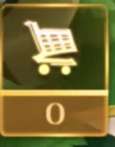
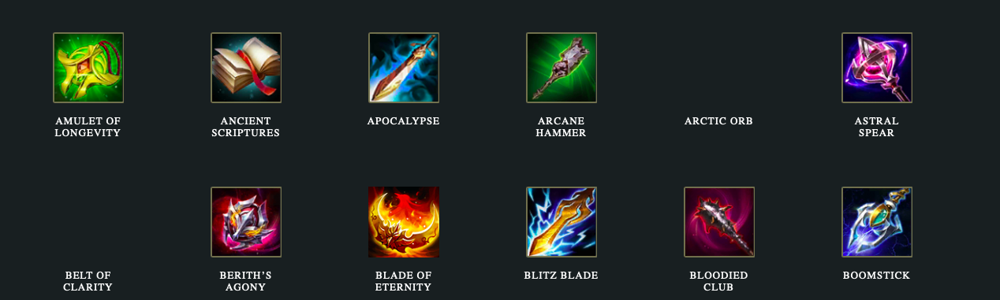

Gear
Items are important for boosting characters’ attributes like attack speed or maximum hit points (HP). They can be purchased with gold by tapping the shopping cart below the minimap or by selecting from two preset options. There are three tiers of item strength: Tier 1 items are the cheapest, most basic items, while Tier 3 items are very expensive but offer multiple advantages to the player. Furthermore, higher tier items require ownership of lower tier items to be available for purchase. Check the Armory guide for more details. The items are additionally split into five categories: Attack, Magic, Defense, Movement, and Jungling. Choosing items that fit your character and/or the strategy you wish to employ in a particular game is crucial to achieving victory.

